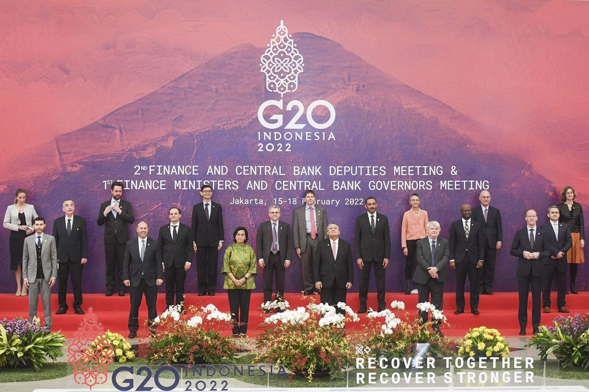
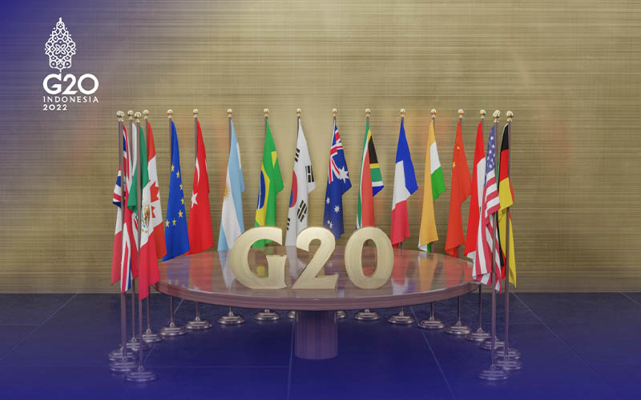

Group of Twenty (G20) adalah forum kerja sama multilateral yang terdiri dari 19 negara utama dan Uni Eropa. Forum ini didirikan pada tahun 1999 untuk membahas isu-isu penting di bidang ekonomi global. G20 mencakup negara-negara dengan ekonomi terbesar di dunia, baik negara maju maupun berkembang, yang bersama-sama menyumbang sekitar 80% dari PDB dunia, 75% perdagangan internasional, dan 60% populasi global.


Tujuan Utama G20
Meningkatkan Stabilitas Ekonomi Global
Mengatasi risiko-risiko ekonomi yang dapat mengganggu stabilitas global, seperti krisis keuangan.
Mendorong Pertumbuhan Ekonomi Berkelanjutan
Mendukung investasi, perdagangan, dan inovasi untuk pertumbuhan ekonomi yang inklusif.
Mengatasi Tantangan Global
Menyelesaikan isu-isu global seperti perubahan iklim, ketahanan pangan, dan pengentasan kemiskinan.
Memperkuat Sistem Keuangan Internasional
Mereformasi institusi keuangan internasional, seperti IMF dan Bank Dunia, agar lebih inklusif.
Manfaat Kerja Sama di G20
Stabilitas Ekonomi Global/h4>
Forum G20 menjadi ruang diskusi untuk mengatasi ketidakpastian ekonomi global dan mencegah krisis keuangan.
Solusi untuk Tantangan Global
G20 menyediakan platform untuk menyelesaikan masalah yang membutuhkan kolaborasi internasional, seperti perubahan iklim dan pandemi.
Peningkatan Kolaborasi Antarnegara
Anggota G20 berbagi praktik terbaik, teknologi, dan sumber daya untuk pertumbuhan ekonomi yang berkelanjutan.
Dukungan untuk Negara Berkembang
Negara-negara berkembang dalam G20 mendapatkan akses lebih besar ke pasar global dan investasi.
Koordinasi Kebijakan Internasional
G20 membantu menyelaraskan kebijakan ekonomi dan perdagangan antarnegara untuk mendorong stabilitas.